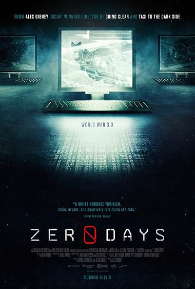
Zero Days
Stuxnet, cyber weapons, and modern cyber warfare.
Documentaries — Cybersecurity / hacker culture11K votes
רשימת צפייה נקייה ומתעדכנת — פוסטר, ציון IMDb והסבר קצר לכל סרט/סדרה.
From IG reel DdIbfoPO2up by Scott Altiparmak, 2026-09-10. Framed as “7 documentaries every cybersecurity student needs to watch.”

Stuxnet, cyber weapons, and modern cyber warfare.
Edward Snowden, NSA surveillance, and digital privacy.
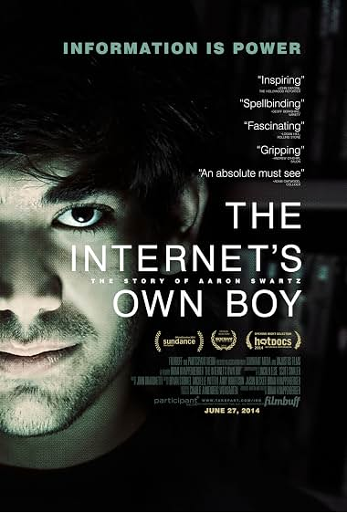
Internet freedom, computer law, and the Aaron Swartz case.
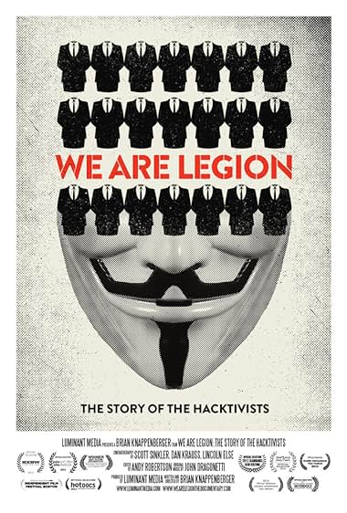
Anonymous, hacker culture, and hacktivism.
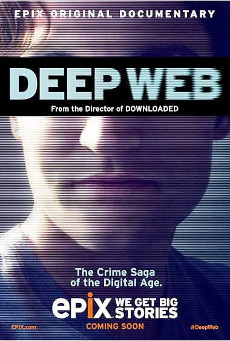
Silk Road, Tor, Bitcoin, and online anonymity.
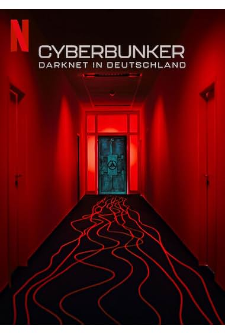
Bulletproof hosting, cybercrime, and a criminal operation run from a former NATO bunker.
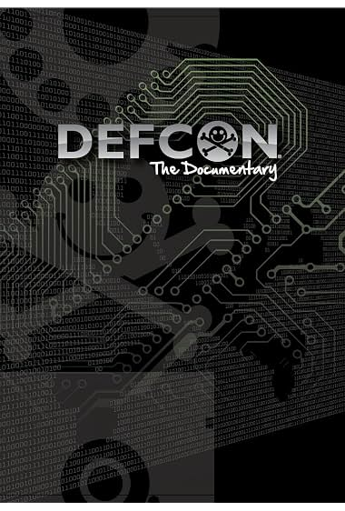
Inside DEF CON and the hacker community.
From IG reel by tv_friend2, 2026-07-03. Caption: “6 shows with multiple seasons to binge watch.”
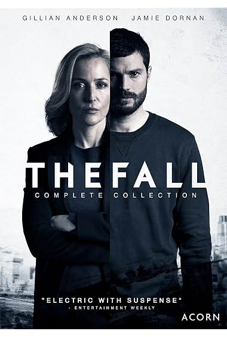
Dark crime thriller. Detective hunts a serial killer in Belfast; tense, psychological, and good for a darker binge.
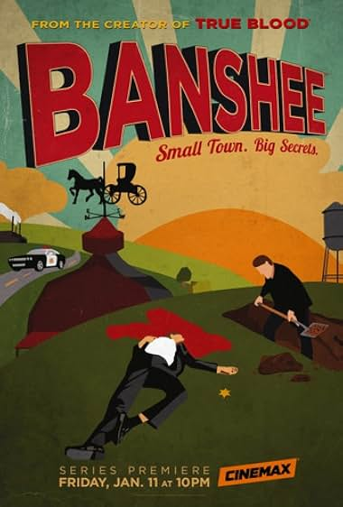
Action/crime thriller. Ex-con assumes the identity of a small-town sheriff and gets pulled into violent local crime.
Psychological horror/thriller from M. Night Shyamalan. A grieving couple hires a nanny and reality starts to twist around their child.
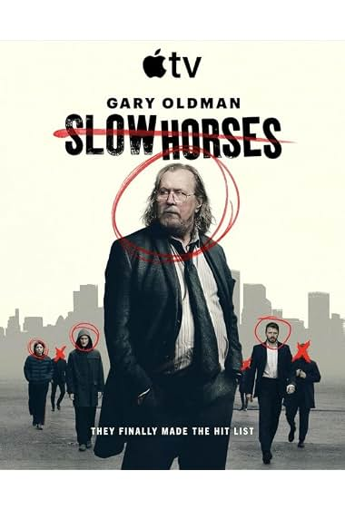
Spy thriller/dark comedy. Disgraced MI5 agents in a dumping-ground unit still get pulled into serious intelligence operations.
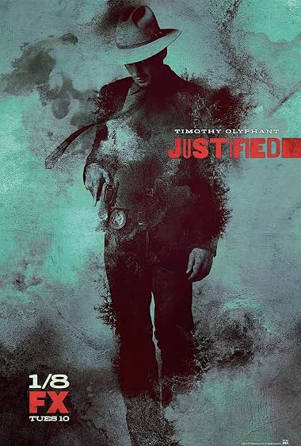
Crime/western drama. U.S. Marshal Raylan Givens brings old-school lawman energy to Kentucky crime cases.
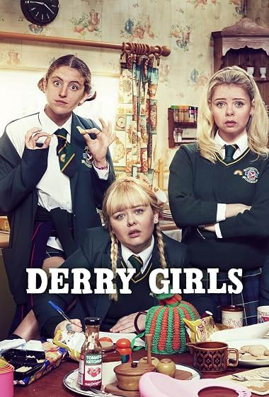
Fast, light comedy. Teen girls in 1990s Northern Ireland; good as a lighter binge between heavier shows.
From IG reel DcTvWVkTM1G by movieguycam, 2026-09-12. Framed as “three movies on Netflix that will make you question what would you do to survive?”
Drama/survival-of-the-mind story with Kristen Stewart as a young soldier assigned to Guantánamo Bay who forms a bond with a detainee and starts questioning the system around her.
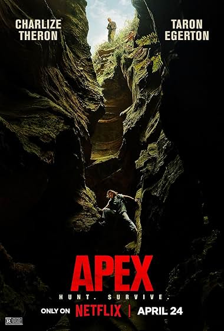
Survival thriller about a woman pushed physically and mentally in the wilderness, where every decision matters.
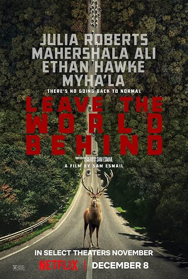
Apocalyptic psychological thriller about a family getaway collapsing after strangers arrive, communications go down, and nobody knows what is happening outside.
Additional Prime Video mind-benders from IG reel by movieguycam, 2026-09-10. Framed as “three movies on Prime Video that will genuinely alter your brain chemistry.”
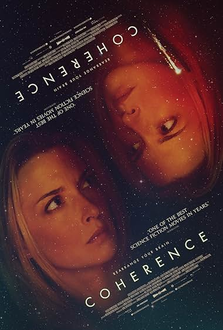
Low-budget sci-fi thriller. Friends gather for a dinner party while a comet passes overhead and reality starts fracturing; recommended for real-time panic, paranoia, and “what is happening?” tension.
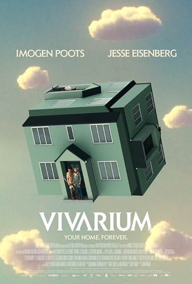
Surreal sci-fi/horror thriller with Jesse Eisenberg. A couple tours a suburban house and becomes trapped in an endless identical neighborhood; strange, claustrophobic, and unsettling.
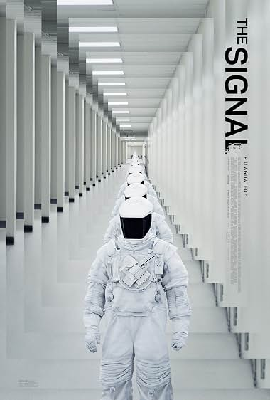
Sci-fi mystery/thriller. Two friends track a mysterious hacker and the story suddenly turns into something very different; best watched knowing as little as possible.
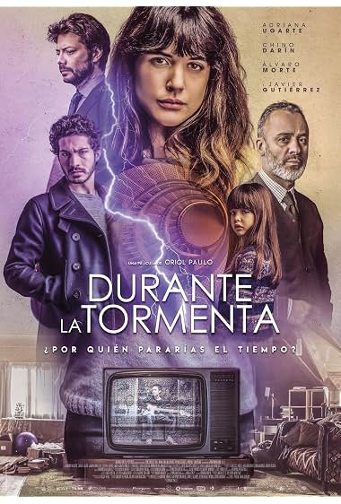
Spanish sci-fi thriller. A woman communicates through an old TV with a boy living 25 years in the past, saves him, then wakes into a different life where only she remembers the original reality.
Near-future sci-fi murder mystery. A prosecutor investigates a billionaire’s death and the case expands into memory transfer, consciousness, and identity.
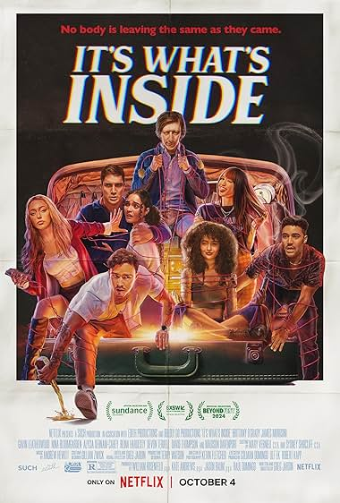
Creative body-swap psychological thriller/comedy. College friends reunite before a wedding, use a device that swaps bodies, and secrets spiral the night out of control.
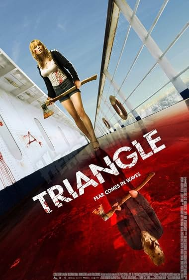
Survival thriller that starts with friends caught in a storm and boarding an abandoned ocean liner, then turns into a time-loop/mind-bender.
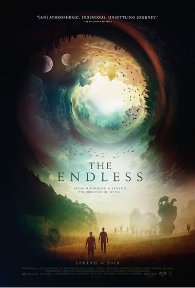
Cosmic sci-fi/horror about two brothers returning to the UFO cult they escaped, where time and reality feel wrong.
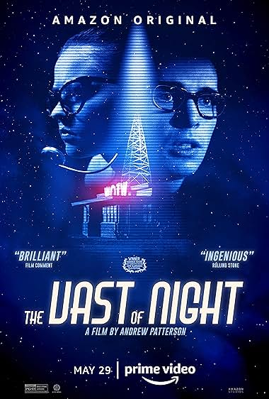
1950s New Mexico sci-fi mystery about two teens at a radio station investigating an unexplained audio frequency; slow-burn and creepy.
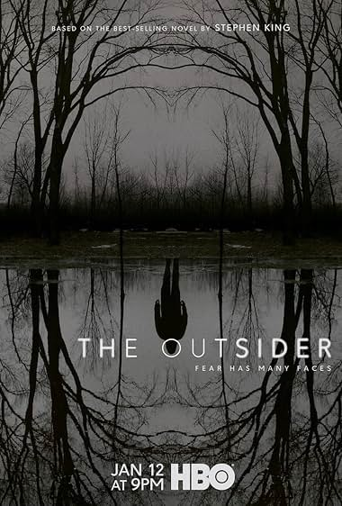
Crime/supernatural thriller. A boy is murdered and the evidence points clearly to one man, except he has an alibi placing him elsewhere at the same time; starts as crime mystery and turns darker/creepier.
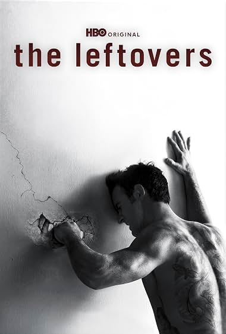
Emotional mystery/drama. 2% of the world’s population disappears without explanation; the focus is on grief, loss, and how the people left behind search for meaning.
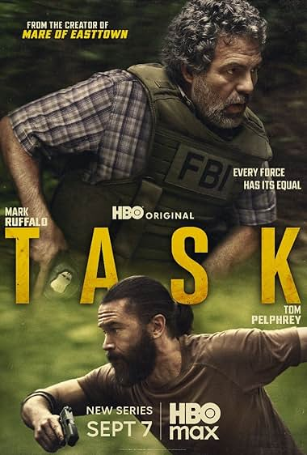
Crime drama starring Mark Ruffalo. FBI agent leads a task force trying to stop a string of violent robberies; recommended for realistic performances and escalating tension.
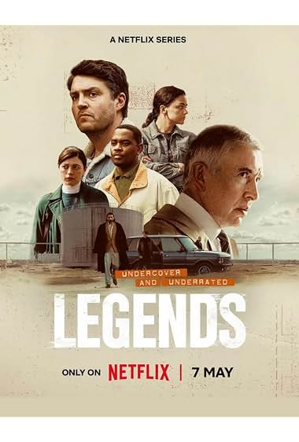
Crime drama. Based on a real 90s UK story: customs officers thrown into deep undercover work with little training, building fake identities to infiltrate drug gangs; the longer they stay under, the more they risk losing themselves.
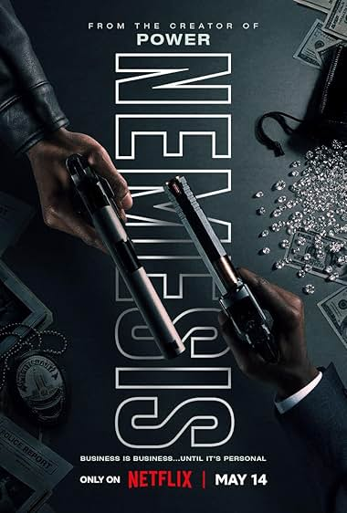
Psychological crime thriller. Elite criminal mastermind vs. an equally intelligent, obsessed detective; every episode is a battle of strategy, manipulation, and mind games where both characters bend their morals.
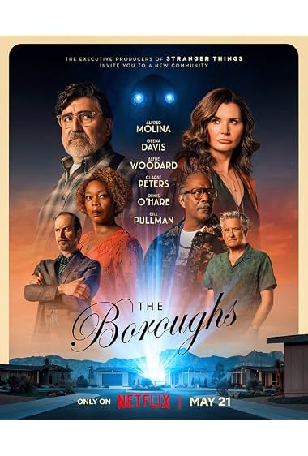
Sci-fi horror from the creators of Stranger Things. Set in a retirement community where elderly residents start losing memories, energy, and years of their lives; the overlooked group must come together to stop something bigger.
From IG reel 2026-05-15 (counted from #10 to #1). All cited as having "best plot twists in cinema":
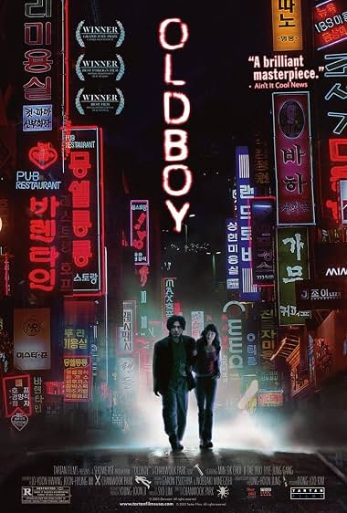
Iconic Korean revenge thriller (2003, dir. Park Chan-wook). Considered a touchstone for plot-twist endings.
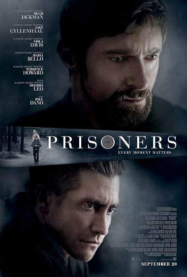
Crime/thriller (2013), Hugh Jackman & Jake Gyllenhaal. Father investigates daughter's disappearance; "the plot twist, man".
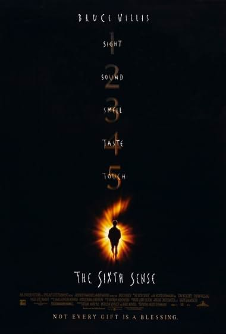
Supernatural thriller (1999), Bruce Willis. "The whole movie relies on this plot twist".
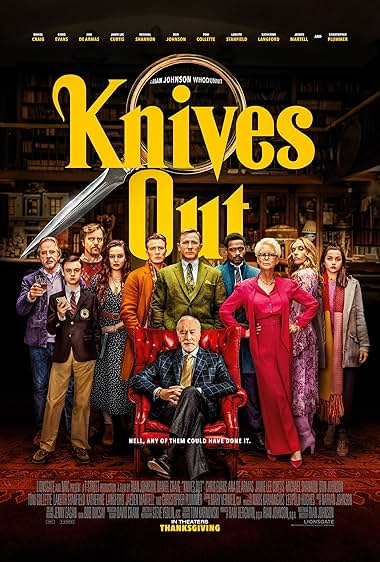
Murder mystery (2019), Rian Johnson. Whole trilogy great, but the first one has a special place.
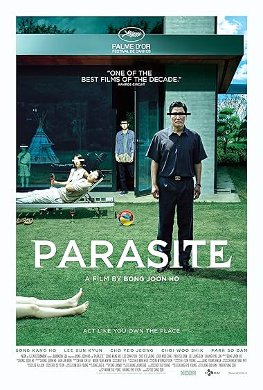
Korean dark thriller (2019), Bong Joon-ho. "Many interesting plot twists" — Oscar winner.
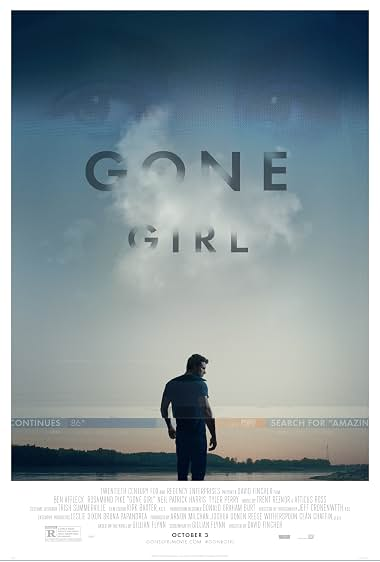
Psychological thriller (2014), David Fincher. "Absolutely phenomenal".
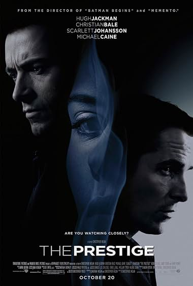
Magicians/rivalry mystery (2006), Christopher Nolan. "There are plot twists and there are plot twists".
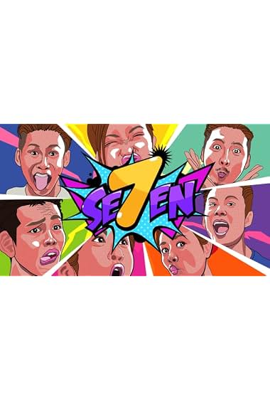
Crime thriller (1995), David Fincher. "What's in the box".
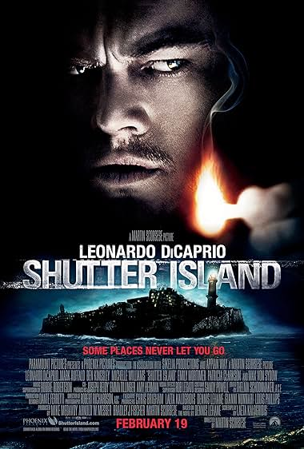
Psych thriller (2010), Martin Scorsese with DiCaprio. "You can't miss it".
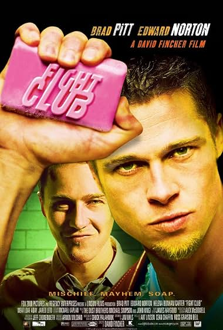
Cult classic (1999), David Fincher. "The moment you find out, you feel the immediate need to re-watch".
From IG reel 2026-05-19, episode 7 of a plot-twist series. Each is paired with a film Asi may already know.
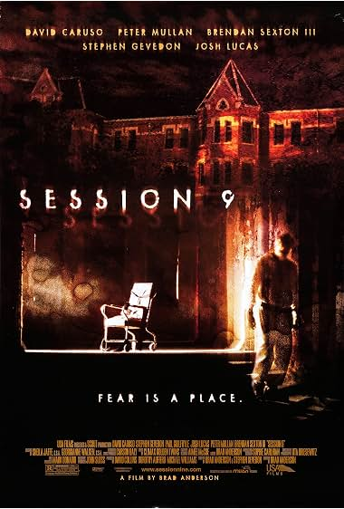
Psychological horror. Asbestos cleanup crew takes a job in an abandoned asylum; slow-burn dread with a chilling payoff.
if you loved Shutter Island.
Supernatural drama. Woman returns to her childhood home when her son begins interacting with something unseen. "Twist hits so hard, go in blind."
if you loved The Sixth Sense.
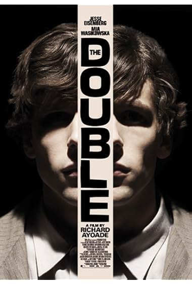
Dark surreal drama. Timid man's life spirals after his confident doppelgänger takes over everything. "Will make you deeply uncomfortable, you'll think about it for days."
if you loved Fight Club.
Psychological thriller. Man becomes obsessed with finding out what happened to his missing girlfriend. "One of the most haunting endings ever — if you watch any film on this list, make it this one."
if you loved Se7en.
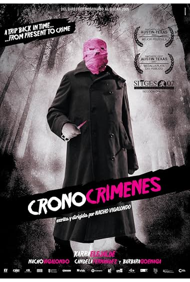
Sci-fi/time-loop. Man accidentally gets stuck in a time loop that becomes something darker. "Clever, tense, serious mind-bender, go in blind."
if you loved Ex Machina.
From IG reel DZ0fwFcJ6o7 by George Carmi, 2026-09-12. Framed as a top-5 “greatest limited series of all time.”
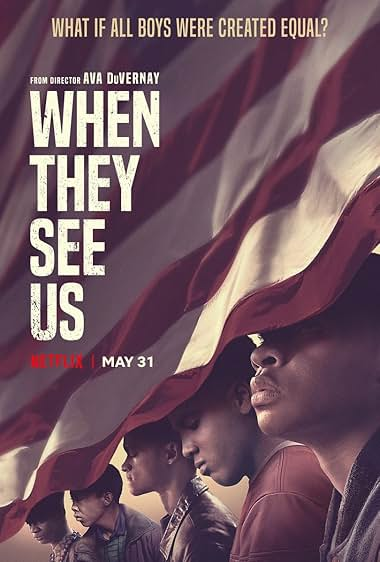
Devastating true-crime/social-justice limited series about the Central Park Five case; emotionally heavy.
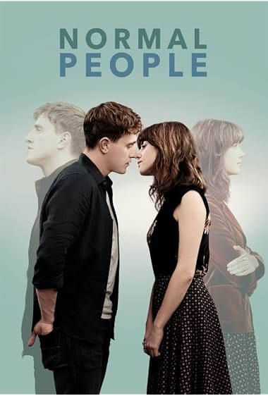
Intimate romantic drama; heartbreaking, quiet, and strongly written.
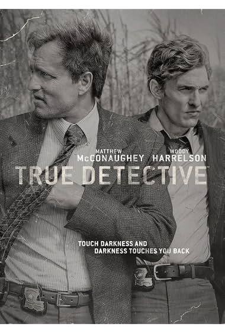
Anthology crime season with Matthew McConaughey and Woody Harrelson; dark, philosophical, and widely treated as elite TV.

Nuclear-disaster mini-series; already on the high-IMDb list, reinforced here as a top limited-series pick.
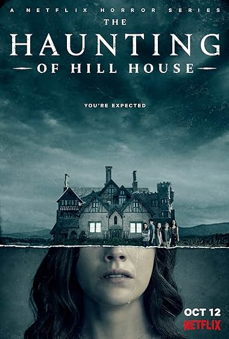
Horror limited series; the reel ranks it #1 and calls it one of the greatest horror outings in film or TV.
Filtered to high-rated, adult-skewing shows. Teen shows (Vampire Diaries, Teen Wolf, Hannah Montana, Glee, Arrow, etc.) excluded per Asi's preference.
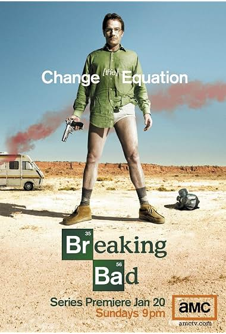
IMDb 9.5. Chemistry teacher turns meth maker. The benchmark of prestige TV.
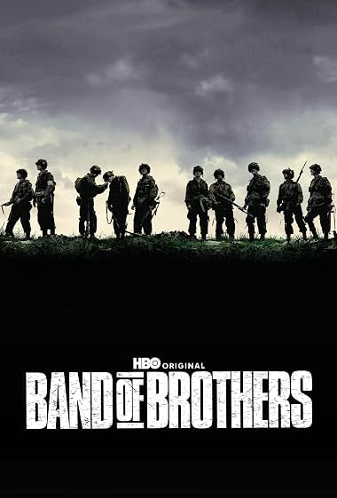
IMDb 9.4. WWII Easy Company through Europe. Tom Hanks/Spielberg.
IMDb 9.3. The 1986 nuclear disaster, dramatized. 5 episodes.
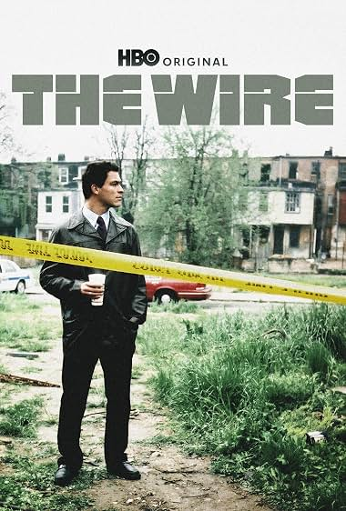
IMDb 9.3. Baltimore drug trade through the eyes of cops, dealers, politicians, journalists. "Greatest TV show ever made" consensus.
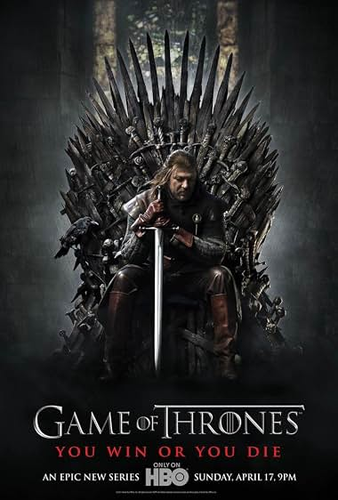
IMDb 9.2. Epic fantasy political thriller. Note: divisive final 2 seasons.
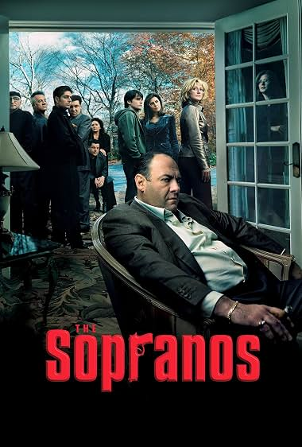
IMDb 9.2. NJ mafia boss in therapy. Pioneer of prestige TV.
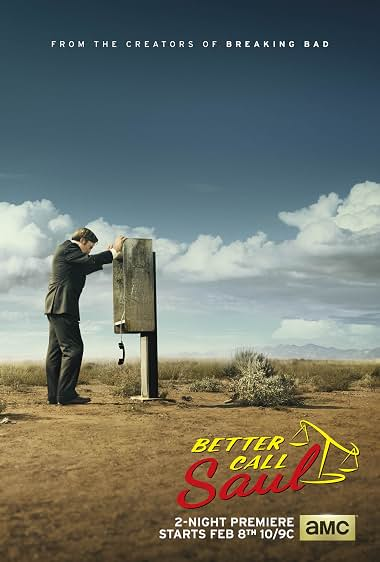
IMDb 9.0. Breaking Bad prequel — Jimmy McGill's slide into Saul Goodman.
IMDb 9.0. Modern Sherlock Holmes with Cumberbatch. 4 seasons of feature-length episodes.
IMDb 9.0. Mockumentary sitcom. Light, infinitely rewatchable.
IMDb 8.9. "The show about nothing". Foundational sitcom.
IMDb 8.6. Cynical superhero satire. Violent and political.
IMDb 8.6. Modern western — Montana ranching dynasty fighting developers, tribes, family.
IMDb 8.6. 80s nostalgia + supernatural horror; final season pending.
IMDb 8.6. Feudal Japan epic, English navigator stranded with samurai. Lavish production.
IMDb 8.6. Forensic blood-spatter analyst who is also a serial killer (of killers).
IMDb 8.5. Stressed-out Chicago restaurant kitchen. Short tense episodes.
IMDb 8.5. Chicago Gallagher family barely surviving. Dark comedy.
IMDb 8.4. Sci-fi western: AI hosts in an immersive theme park gain consciousness.
IMDb 8.3. GoT prequel — Targaryen civil war.
IMDb 8.1. Zombie post-apocalypse, runs long.
IMDb 8.1. Physicist roommates sitcom.
IMDb 8.2. Wealthy chaebol heiress + small-town husband, marriage in crisis. Hit K-drama.
IMDb 8.9. Classic sitcom. _Marked watched 2026-05-16._